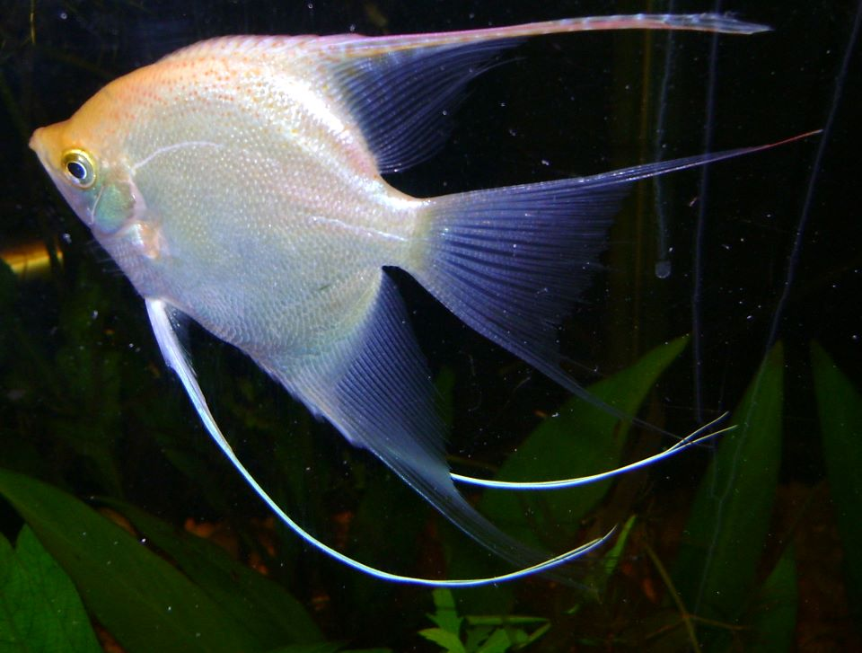

| Aves | |
|---|---|
| Especies | Descripcion |
| PEZ DIABLO: Hypostomus plecostomus es un conocido pez de acuario del orden Siluriformes, originario de Sudamérica. Puede encontrarse desde Costa Rica hasta Argentina, especialmente en Perú, Panamá, Colombia, Venezuela, Ecuador, Argentina, Uruguay y Guyana. |
|
|  | PEZ ANGEL: El escalar o pez ángel es una especie de pez de agua dulce perteneciente a la familia de los cíclidos. Es una de las especies de peces tropicales más populares en el mundo de la acuariofilia. |
| PEZ TIGRE: Al pez tigre Goliat le gustan las aguas turbulentas, donde los peces que son menos poderosos nadadores luchan contra la corriente, haciéndolos vulnerables a los ataques. Tiene una vista excelente y la capacidad de detectar vibraciones de baja frecuencia emitidas por la presa. Por lo general, nadan alrededor de la presa antes de golpear con la brutalidad de una piraña. Recientemente se ha descubierto que también comen aves, las cazan cuando estas vuelan cerca del agua. |
|